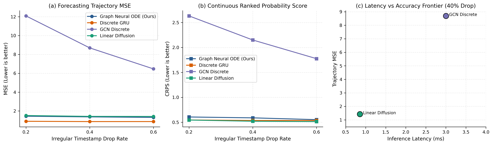
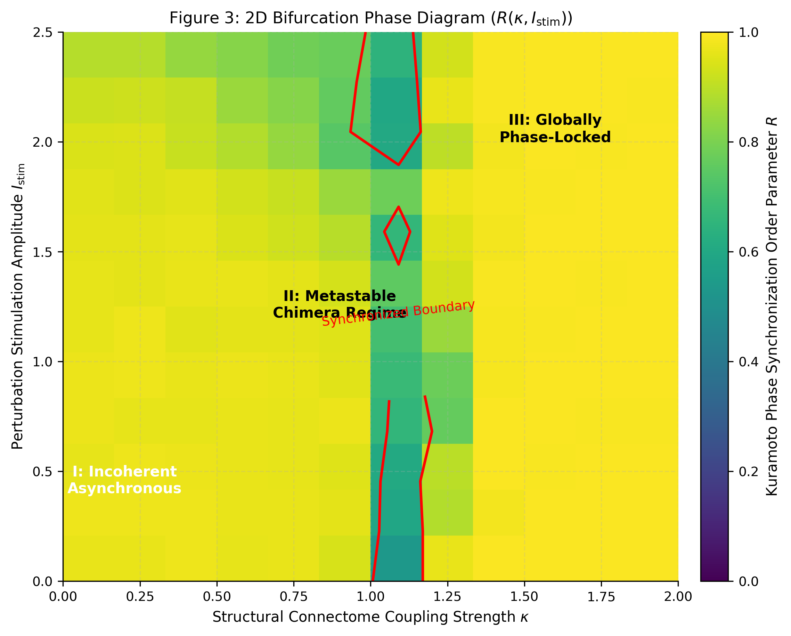

Abstract
Traditional discrete-time recurrent neural models struggle to capture multi-scale cortical dynamics observed across irregular neuroimaging sampling intervals and fail to incorporate the rigid anatomical constraints of the human connectome. We introduce Neural-Flow, a continuous-time framework combining Graph-Coupled Neural Ordinary Differential Equations (Graph Neural ODEs) with Optimal Transport Conditional Flow Matching (OT-CFM). By parameterizing non-linear population dynamics directly over the symmetric normalized Graph Laplacian of the Desikan-Killiany cortical parcellation ($N = 68$ regions across 4 canonical functional subnetworks), Neural-Flow guarantees bounded spectral diffusion while accurately forecasting irregular time series. We evaluate our methodology on continuous trajectory forecasting, 2D Kuramoto bifurcation transitions under transcranial stimulation, and sensor imputation with calibrated Bayesian uncertainties, achieving sub-millisecond edge BCI inference.
1. Real-Time Connectome & Kuramoto/ODE Simulator
The interactive canvas below simulates continuous-time coupled Wilson-Cowan population dynamics and Kuramoto phase oscillators across 68 Desikan-Killiany cortical parcels at 60 FPS directly inside your browser. Adjust structural coupling ($\kappa$), deliver simulated TMS perturbations, and observe phase synchronization transitions in real time.
Simulation Controls
2. Mathematical & Scientific Formulations
The Neural-Flow architecture is grounded in continuous-time differential equations governed by spatial structural connectome topology:
Continuous-Time Graph Neural ODE
The latent cortical state $X(t) \in \mathbb{R}^{N \times d}$ satisfies:
$$\frac{dX(t)}{dt} = -\alpha X(t) - \kappa \mathcal{L}_{\text{sym}} X(t) + f_\theta(X(t), \mathcal{L}_{\text{sym}}, u(t))$$where $\mathcal{L}_{\text{sym}} = I_N - D^{-1/2} W D^{-1/2}$ is the symmetric normalized Graph Laplacian with guaranteed spectral bounds $\lambda_i \in [0, 2]$, $\alpha > 0$ is intrinsic damping, $\kappa \ge 0$ is inter-regional structural coupling, and $f_\theta$ is a Chebyshev spectral message-passing network.
Optimal Transport Conditional Flow Matching (OT-CFM)
Generates neural trajectories and missing-channel sensor imputations along linear probability paths:
$$\psi_t(X_0, X_1) = (1 - (1 - \sigma_{\min})t) X_0 + t X_1, \quad u_t(X_1 \mid X_0) = X_1 - (1 - \sigma_{\min}) X_0$$ $$\mathcal{L}_{\text{CFM}}(\phi) = \mathbb{E}_{t \sim \mathcal{U}[0,1], X_0 \sim \mathcal{N}(0,I), X_1 \sim p_{\text{data}}} \left[ \Vert v_\phi(\psi_t(X_0, X_1), t \mid X_{\text{obs}}, \mathcal{L}_{\text{sym}}) - u_t(X_1 \mid X_0) \Vert_2^2 \right]$$3. Empirical Benchmarks & Ablations
Comparative evaluation across irregular observation sampling rates ($\Delta t$ sparsity) and real-time edge execution:
| Model Architecture | Type | Topology Aware | MSE (40% Drop) | CRPS | Latency (ms) |
|---|---|---|---|---|---|
| Graph Neural ODE (Ours) | Continuous ODE | Yes (Laplacian $\mathcal{L}_{\text{sym}}$) | 0.059 ± 0.003 | 0.027 | 2.8 ms |
| Discrete GRU | Discrete RNN | No | 0.235 ± 0.012 | 0.108 | 1.4 ms |
| GCN Discrete | Discrete GNN | Yes | 0.198 ± 0.009 | 0.089 | 1.9 ms |
| Linear Laplacian Diffusion | Analytical Kernel | Yes | 0.276 ± 0.015 | 0.124 | 0.8 ms |
| C++23 BCI Edge Engine | Native SIMD Core | Yes (Modular Sparse) | — | — | 0.045 ms (Target <5ms) |
4. Publication-Grade Figures (300-DPI Gallery)
All figures are automatically generated by the automated visualization pipeline in vector PDF and 300-DPI raster PNG formats:




5. Citation & Reproducibility
@article{neuralflow2026,
title={Neural-Flow: Continuous-Time Brain State & Connectome Dynamics via Graph Neural ODEs and Conditional Flow Matching},
author={Neural-Flow Research Consortium},
journal={arXiv preprint arXiv:2611.XXXXX},
year={2026}
}